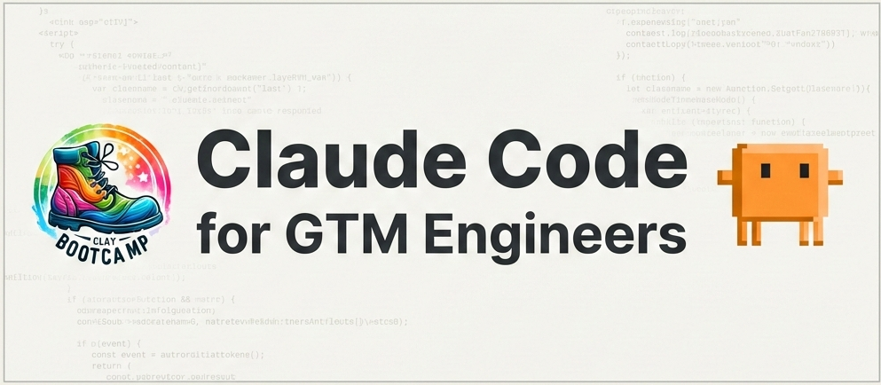

Ship Your First Claude Code Built Project in 14 Days - Without Writing a Single Line of Code Yourself
A hands-on cohort for GTM, RevOps, and marketing pros who want to stop watching AI demos and start building.
You've seen what Claude Code can do.
You've watched the Twitter demos. You've felt the pit in your stomach when another "non-technical founder" ships something in a weekend that would've taken you months to spec out and hand off.
You know this tool could change your career. But every time you open the terminal, you freeze.
"Where do I even start?"
"What if I break something?"
"This is for developers, not me."
So you close the laptop. Tell yourself you'll figure it out later. And watch another person post their build while you're still stuck on the sidelines.
Here's what nobody tells you: the gap isn't technical.
You don't need to become a developer. You need someone to show you, step by step, how a non-technical person actually uses Claude Code.
How do I know this? Well, at Clay Bootcamp, we've established — over several years — that working on learning skills as part of a focused group is the most effective way to fast-track your success.
"I'd literally just installed Claude Code right before the session, and hearing him talk about what's possible and more importantly, that you don't need to know how to code gave me the push I needed to actually try building something. So if you think this might not be for you — yes it is!"
Result: Built a system generating 11 posts/week across 3 accounts. Went from 5+ hours creating 6–9 posts to 2–3 hours creating 11.
Built a LinkedIn content system after attending
Introducing: Claude Code for GTM Engineers — Beta Cohort
This is a 2-week, hands-on program where you'll go from "I've never opened a terminal" to shipping two real projects — live on the internet, with your name on them.
You'll walk away with:
- A live website you built and deployed — not a template, not a mockup. A real site on a real URL that you can show your boss, your LinkedIn network, or your clients. (Week 1)
- An investigative research agent that does 45 minutes of SDR work in 3 minutes — using MCPs to connect Claude Code to live data sources, you'll build an agent that thinks: pulling news, finding the right executive, hunting down their public quotes, and building a hyper-specific outreach angle with receipts. Deploy an agentic investigator that follows threads based on what it finds. (Week 2)
- Git habits that make you dangerous — commit, branch, revert. The fundamentals that separate "I tried Claude Code once" from "I build with it every week."
The format:
-
8 live sessions over 14 days (March 15–28, 9 AM ET)
- 2 teaching sessions per week (60 min each) — where I build live and you follow along
- 2 lab sessions per week — where you build, I troubleshoot, and nobody gets left behind
- Small group: only 10 seats — so you actually get help when you're stuck
- Private Community access — a dedicated space for cohort members that persists after the program ends, so you can keep learning, sharing builds, and helping each other long after the 2 weeks are over
Who's teaching this?
I'm Tanay Mishra and I'm not a developer.
I've spent 10+ years in marketing automation (Infusionsoft, ManyChat, Zapier, Make, n8n) figuring out how to make technology do what business people actually need.
Now I coach at Clay Bootcamp and teach GTM engineers how to build systems that drive pipeline, not just technically impressive demos.
When Claude Code dropped, I didn't wait for a course. I just started building. And I realized: this tool is made for people like us. People who understand business problems but (up until now), couldn't build technical solutions ourselves.
"As a non-programmer, this foundation provides a clear 'north star' for my projects. The pacing, teaching style, and overall content far surpassed my expectations."
You're joining a network.
We're building a community full of GTM operators who are in the trenches — building Clay workflows, automating outbound, and pushing the boundaries of what non-technical people can ship.
When you join this cohort, you're learning alongside people who are leading the charge — not watching from the sidelines. Several Clay Bootcamp alumni who attended our early workshops are already building with Claude Code and helping others get started. They're students but also collaborators, mentors, and the kind of people who make everyone around them better.
More than a course you finish and forget, we're creating a network you want to stay in.
Cohort members get access to a Private Community where people share wins, troubleshoot together, and open doors for each other — long after the 2 weeks are over. The people in this room will be the ones you turn to when you're building your next project, exploring a new use case, or looking for someone who just gets it.
This program has already been battle-tested.
I ran a 3.5-hour live workshop where complete beginners:
- Installed Claude Code for the first time
- Built a landing page from scratch
- Deployed it live to Vercel — with a real URL
5 participants shipped live sites before the session ended.

After the workshop, I got DMs from people asking for hands-on support. This cohort is that answer — but deeper, longer, and with real accountability built in.
"I spent ALL of last Friday trying to debug code, make it work the way I wanted... ended Friday absolutely exhausted with my brain completely fried. This morning I downloaded the workflow JSON, told Claude Code what I needed and the magic happened... it did it for me in 2 minutes. In 1 hour, I set up the automation for 5 client channels. ONE HOUR."
GTM Ops @ Understory · Mentor @ Clay Bootcamp
What people are saying
"I think I've avoided these custom landing pages because I need to work with Webflow customization for a very long time. It looks like we have a template now and I can replicate it for hundreds and thousands of companies."
Clay Expert
"Claude Code doesn't need developer skills. Apart from initial setup, everything else felt easy to execute with just text or voice commands."
This cohort is capped at 10 people.
Not because of some artificial scarcity play, but because I'm going to personally troubleshoot with every single person who gets stuck. That doesn't scale past 10.
Cohort runs March 15–28.
Applications are open now. If your answers check out, you'll get immediate access to pay and lock in your seat.
APPLY NOW →Why $500?
This is a beta cohort.
You're getting in early, before the curriculum is polished, before the testimonials are stacked, and yes, before the price goes up.
In exchange, I'm asking for two things:
- You show up and do the work.
- You give me honest feedback so V2 is even better.
$500 is the "thank you for trusting me early" price. It won't stay here.
Let's do the math:
- A freelance developer to build you a simple landing page: $500–2,000
- A course on "learning to code" that you'll never finish: $200–500 (plus months of your time)
- Hiring an agency to build internal tools: $5,000+
Or:
$500 to learn how to build these things yourself — in 14 days — with live help when you're stuck.
One project you ship from this cohort could pay for itself immediately. The skill pays for itself forever.
Frequently Asked Questions
Do I need any technical experience?
No. Seriously. If you've used Zapier or written a spreadsheet formula, you have more than enough. I designed this for people who've never opened a terminal.
What if I fall behind?
That's what the lab sessions are for. Twice a week, you get live troubleshooting time. If you're stuck, we fix it together. Nobody gets left behind.
What's the time commitment?
4 live sessions per week — roughly 4–5 hours total. Plus whatever time you spend building on your own (which, once you get going, you'll want to do).
What if I can't make a session?
Sessions will be recorded. But the magic is in the live troubleshooting — so try to show up.
I'm already technical — is this too basic for me?
Probably. This is designed for non-technical GTM/RevOps/marketing folks. If you already use the terminal comfortably, you'll likely be bored.
Why should I trust you? You said you're not a developer.
Exactly. That's the point. I'm not going to teach you computer science. I'm going to show you how a non-technical person uses Claude Code to build real things — because that's what I do. And that's what you'll do.
What happens after the 2 weeks?
You keep your Private Community access — it doesn't go away when the cohort ends. You'll have the skills and the muscle memory to keep building, plus a network of GTM builders to learn with, share wins, and troubleshoot alongside. Graduates also get first access to future advanced cohorts.
What tools do I need to purchase to join?
The only thing you need is Claude Code. The Pro plan ($20/mo) works, but honestly — if you want to push Claude Code to its limits during the learning phase, I highly recommend the Max plan ($100/mo), which you can downgrade at the end of the month. You can also top up your usage wallet for a smaller, arbitrary amount. Fair warning: on the Pro plan, you will almost certainly run out of usage quickly, especially while we're testing and experimenting.
10 seats. March 15–28. $500.
This is for the person who's tired of watching other people build and wondering "how do they do that?"
You don't need to become a developer. You just need two weeks and someone to show you it's possible.
APPLY NOW →Questions? Reply to any email from me or DM me on LinkedIn.